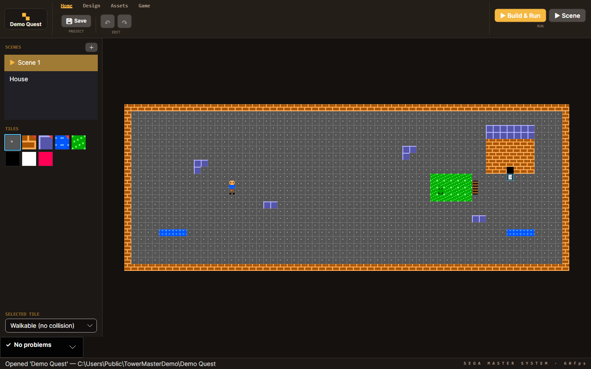
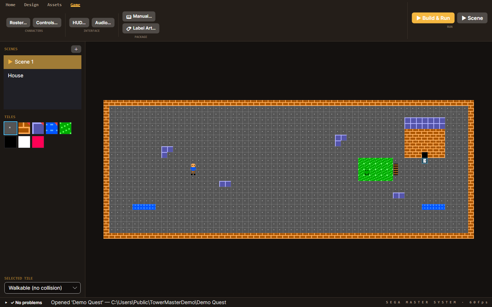

Build a real Sega Master System game — from an empty project to a bootable ROM and a boxed cartridge.
TowerMaster is a free, portable Windows (x64) app. Install it with winget:
winget install Silvatower.TowerMasterOr download the latest release,
unzip it anywhere, and run TowerMaster.exe. There's no installer and nothing to configure.
On the start screen choose New Project, give it a name and a folder, and pick a template (platformer, top-down adventure, shoot-'em-up, RPG, and more). Each template seeds a starter scene, tiles, sprites, and sensible subsystem settings so you have something playable from the first second — or pick Empty Project to start from a blank scene and turn subsystems on yourself.
A project is just a folder — project.json, your PNG assets, and the scenes. You can reopen it
anytime from the Recently opened list.

Ctrl+wheel to zoom.Pick a tile from the palette and click or drag on the canvas to paint. Each tile has a collision setting — shown in the Selected tile dropdown — so you decide what's floor, wall, or a one-way (jump-through) platform.
Under the Assets tab you manage the game's sprites. Two ways to add one:
Place sprites in a scene as entities (the player, enemies, pickups, doors). Select several at once to move, copy/paste, nudge, or delete them as a group.
Behaviors are what make things do something — and you never write engine code for them. TowerMaster ships a hand-optimized Z80 game engine; you switch features on as data. Turn on things like:
The Game tab exposes higher-level settings: the control scheme (Controls…), the character roster, HUD and audio — and Features…, where you toggle subsystems on or off (platformer extras, shoot-'em-up, boss, RPG leveling, battery save) at any time, not just at creation. Conflicting options disable each other so you can't build an impossible combination.
Place a door on a tile, point it at a target scene and an arrival spot, and TowerMaster stitches your scenes into one game — every scene reachable through a door is compiled into the ROM. This is how you build towns, dungeons, and connected worlds.
Hit ▶ Build & Run and your game boots instantly in the built-in Sega Master System emulator (a from-scratch Z80 + VDP + PSG/FM implementation). Use ▶ Scene to launch straight into the scene you're editing, so you can test a level without playing from the start.
The same build produces a real, bootable .sms ROM — the exact bytes that run on original
hardware and every accurate emulator. TowerMaster enforces the console's real limits as you go, so what
builds, runs.

The goal is a real cartridge in a box. From the Game → Package group:
Print those, flash the .sms to a cartridge, and you've made a real Master System game.